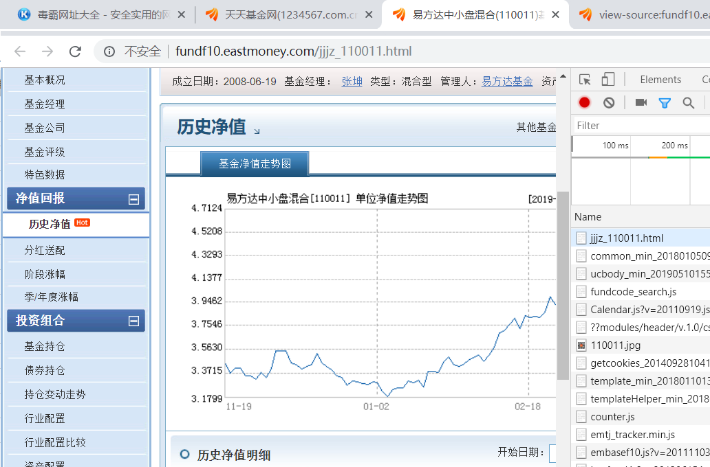
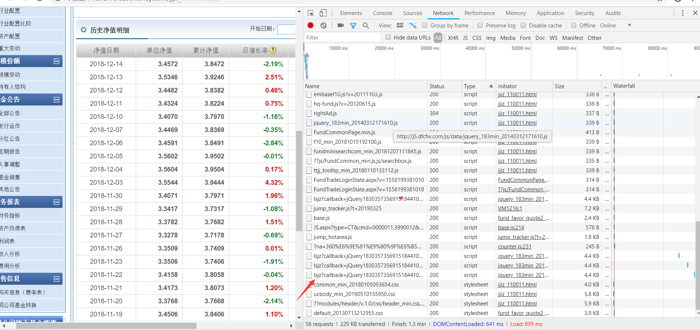
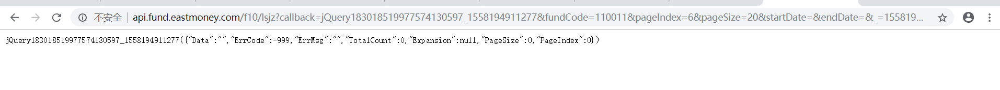
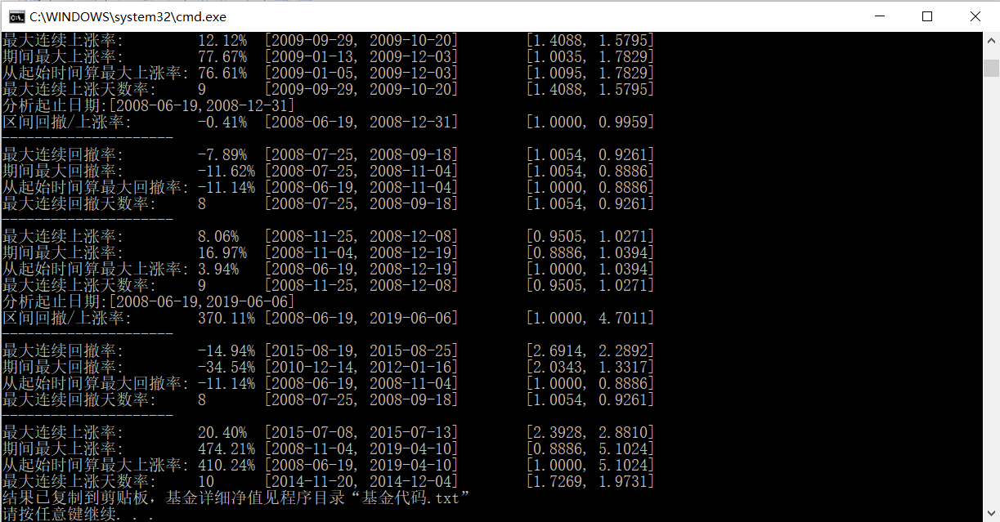

最近有一个网友让我帮他写一个工具分析基金回撤情况，前几天项目比较忙就直没动手，今天晚上有点时间，研究了一下。
先把今天的研究成果分享：
要分析基金净值回撤，首先肯定要有基金的净值变化数据。要抓数据肯定是到天天基金网上抓，毕竟人家是专业机构。
我找了一只个人比较喜欢的基金，易方达中小盘混合 (110011)，在天天基金网站上很容易找到它的历史净值页面：
http://fundf10.eastmoney.com/jjjz_110011.html
因为之前抓过天天基金当日基金净值数据，知道它的页面数据是藏在js里面，在浏览器访问页面后，执行js从服务器动态获取再展示到浏览器。
要知道是哪个js脚本，方法有很多。我用的是谷歌浏览器自带的开发者工具，如下图：

打开开发者工具的情况下浏览基金净值页面，就看到该页面访问的所有资源网址。数据比较乱，不过关心的只是js，所以按类型排了序。不过可以看出来访问的js也不少，暂时还不好知道是哪一个js包含我要的数据。
由于默认只显示了第一页数据，所以我就随意点了其它页净值，从访问的资源列表变化情况，很容易发现想要的js网址，如图

把这些带有callback的js网址拷下来，如下：
http://api.fund.eastmoney.com/f10/lsjz?callback=jQuery183018519977574130597_1558194911277&fundCode=110011&pageIndex=6&pageSize=20&startDate=&endDate=&_=1558195435735
从命令参数上猜测fundCode是基金代码，pageIndex是净值页面页码，其它参数暂时不知道意义。
先尝试使用这个网址在浏览器访问看是啥情况：

可以看出网站对这个js访问做了控制，不让用户直接在浏览器访问。 由于对于http抓包不大熟悉，不清楚这种情况下要怎么处理，总不至于需要写一个浏览器来抓一个js数据吧。
于是找了一个熟悉抓包的朋友咨询一下。咨询结果明天再说，跟下面这个请求有关。
GET /f10/lsjz?callback=jQuery183018519977574130597_1558194911277&fundCode=110011&pageIndex=4&pageSize=20&startDate=&endDate=&_=1558195568400 HTTP/1.1 Host: api.fund.eastmoney.com Connection: keep-alive User-Agent: Mozilla/5.0 (Windows NT 10.0; Win64; x64) AppleWebKit/537.36 (KHTML, like Gecko) Chrome/69.0.3497.100 Safari/537.36 Accept: */* Referer: http://fundf10.eastmoney.com/jjjz_110011.html Accept-Encoding: gzip, deflate Accept-Language: zh-CN,zh;q=0.9
-----------------------------------------------
接上文，这是访问基金净值页面的http请求报文头。注意里面的Referer。百度百科上是这样说的：HTTP Referer是header的一部分，当浏览器向web服务器发送请求的时候，一般会带上Referer，告诉服务器我是从哪个页面链接过来的，服务器基此可以获得一些信息用于处理。
这里天天基金网站就是用Referer来防止别人盗链的。我直接在浏览器输入js网址，发送给服务器的请求里面的Referer是空的，但如果是在网页上点击，则Referer是网页的网址。
为了验证加上referer加上后是否能正常访问基金净值数据，我用curl做了一个试验：
curl "http://api.fund.eastmoney.com/f10/lsjz?callback=jQuery183018519977574130597_1558194911277&fundCode=110011&pageIndex=1&pageSize=300&startDate=2018-01-01&endDate=2018-12-31&_=1558194929451" --referer "http://fundf10.eastmoney.com/" --user-agent "Mozilla/5.0 (Windows NT 10.0; Win64; x64) AppleWebKit/537.36 (KHTML, like Gecko) Chrome/69.0.3497.100 Safari/537.36" -o tmp.txt
试验成功，正常获取到了净值。
-----------------------------------------------
获取基金的方法找到了，接下来再看一下js网址：http://api.fund.eastmoney.com/f10/lsjz?callback=jQuery183018519977574130597_1558194911277&fundCode=110011&pageIndex=6&pageSize=20&startDate=&endDate=&_=1558195435735
简单猜测，这里面的fundCode是基金代码，pageIndex是页面编号，pageSize是每页净值数量，startDate和endDate是净值日期区间，如果要获取一年的净值，可以使用
pageIndex = 1，pageSize = 300， startDate = 2019-01-01，endDate = 2019-12-31，用curl再试验一下，猜测得对。
接下来就是体力活了，再写一个程序循环获取每年净值，然后再进行分析就可以。
-----------------------------------------------
看我分析110011 易方达中小盘的结果

可以看出易方达中小盘2008年成立，至今总收益是370%，也就是10年前把一万投入该基金并且设置了分红再投资，现在理论上市值有3万7。
在这期间买入该基金，最惨的是在2015-08-19，从那天起基金连续下跌，直到2015-08-25才开始止跌，期间总共跌幅接近15%。
最幸运的是在2015-07-08买入基金的投资者，他们买了后基金就一直上涨，直到涨了20%才开始回调。
今年易方达中小的业绩如下：
分析起止日期:[2019-01-02,2019-06-06]
区间回撤/上涨率: 29.92% [2019-01-02, 2019-06-06] [3.6184, 4.7011]
---------------------
最大连续回撤率: -5.21% [2019-04-30, 2019-05-06] [5.0403, 4.7775]
期间最大回撤率: -7.92% [2019-04-10, 2019-05-09] [5.1024, 4.6981]
从起始时间算最大回撤率: -1.34% [2019-01-02, 2019-01-03] [3.6184, 3.5699]
最大连续回撤天数率: 4 [2019-03-04, 2019-03-08] [4.5156, 4.2940]
---------------------
最大连续上涨率: 9.22% [2019-01-30, 2019-02-14] [3.8597, 4.2157]
期间最大上涨率: 42.93% [2019-01-03, 2019-04-10] [3.5699, 5.1024]
从起始时间算最大上涨率: 41.01% [2019-01-02, 2019-04-10] [3.6184, 5.1024]
最大连续上涨天数率: 6 [2019-01-30, 2019-02-14] [3.8597, 4.2157]
今年基金还不错的，接近30%，最赚钱的时候是20190410，那时基金赚了41%
-------------------------------------------------------------
有兴趣的同学可以到这里下载我这个小工具：
链接: https://pan.baidu.com/s/1x7S8X5Y5tdtPPdUNI92nJA 提取码: zg97 复制这段内容后打开百度网盘手机App，操作更方便哦
-------------------------------------------------------------
相关代码（写得比较简陋，因为想到一点写一点，以后有时间再考虑优化）
getRetracement.h
#pragma once
#include "stdafx.h"
#include <stdio.h>
#include <iomanip>
typedef struct __tagNetValueInfo{
string strNetValueDate;
double dAccumulatedNet;
__tagNetValueInfo()
{
dAccumulatedNet = 0;
}
__tagNetValueInfo(const string& v1, double v2)
{
strNetValueDate = v1;
dAccumulatedNet = v2;
}
}NetValueInfo;
typedef struct __StatisticalNetValueInfo{
string strValue;
string strNode;
string strBegDate;
double dBegNetValue;
string strEndDate;
double dEndNetValue;
__StatisticalNetValueInfo()
{
dBegNetValue = dEndNetValue = 0;
strBegDate = strEndDate = "-";
}
string getString()
{
string strRet;
char buf[1024];
size_t nStrNodeLen = strNode.size() + 1;
string strPad = "";
for (size_t i = nStrNodeLen / 8; i < 3; ++i)
{
strPad += "\t";
}
_snprintf(buf, sizeof(buf), "%s:%s%s\t",
strNode.c_str(), strPad.c_str(), strValue.c_str());
strRet += buf;
_snprintf(buf, sizeof(buf), "[%s,%s]\t",
strBegDate.c_str(), strEndDate.c_str());
strRet += buf;
_snprintf(buf, sizeof(buf), "[%04f,%04f]\n",
dBegNetValue, dEndNetValue);
strRet += buf;
return strRet;
}
void print()
{
size_t nStrNodeLen = strNode.size() + 1;
string strPad = "";
for (size_t i = nStrNodeLen / 8; i < 3; ++i)
{
strPad += "\t";
}
cout << strNode << ":" << strPad << strValue << "\t";// << endl;
cout << "[" << strBegDate << ", " << strEndDate << "]\t";// << endl;
cout.fill('0');
cout << "[" << fixed << setprecision(4) << dBegNetValue
<< ", " << fixed << setprecision(4) << dEndNetValue
<< "]" << endl;
}
}StatisticalNetValueInfo;
typedef struct __tagResultInfo{
//最大连续回撤率/上涨率信息
StatisticalNetValueInfo resMaxContinRetraceInfo;
StatisticalNetValueInfo resMaxContinRiseInfo;
//最大连续回撤天数/上涨天数信息
StatisticalNetValueInfo resMaxContinRetraceDaysInfo;
StatisticalNetValueInfo resMaxContinRiseDaysInfo;
//最大回撤率/上涨率信息
StatisticalNetValueInfo resMaxRetraceInfo;
StatisticalNetValueInfo resMaxRiseInfo;
//从起始时间算最大回撤率/上涨率信息
StatisticalNetValueInfo resMaxRetraceFromBeginInfo;
StatisticalNetValueInfo resMaxRiseFromBeginInfo;
//从起始时间算回撤率/上涨率信息
StatisticalNetValueInfo resRetraceRiseFromBeginInfo;
__tagResultInfo()
{
resMaxContinRetraceInfo.strNode = "最大连续回撤率";
resMaxContinRetraceDaysInfo.strNode = "最大连续回撤天数率";
resMaxRetraceInfo.strNode = "期间最大回撤率";
resMaxRetraceFromBeginInfo.strNode = "从起始时间算最大回撤率";
resMaxContinRiseInfo.strNode = "最大连续上涨率";
resMaxContinRiseDaysInfo.strNode = "最大连续上涨天数率";
resMaxRiseInfo.strNode = "期间最大上涨率";
resMaxRiseFromBeginInfo.strNode = "从起始时间算最大上涨率";
resRetraceRiseFromBeginInfo.strNode = "区间回撤/上涨率";
}
string getString()
{
string strRet;
strRet += resRetraceRiseFromBeginInfo.getString();
strRet += "---------------------\n";
strRet += resMaxContinRetraceInfo.getString();
strRet += resMaxRetraceInfo.getString();
strRet += resMaxRetraceFromBeginInfo.getString();
strRet += resMaxContinRetraceDaysInfo.getString();
strRet += "---------------------\n";
strRet += resMaxContinRiseInfo.getString();
strRet += resMaxRiseInfo.getString();
strRet += resMaxRiseFromBeginInfo.getString();
strRet += resMaxContinRiseDaysInfo.getString();
return strRet;
}
void print()
{
resRetraceRiseFromBeginInfo.print();
cout << "---------------------" << endl;
resMaxContinRetraceInfo.print();
resMaxRetraceInfo.print();
resMaxRetraceFromBeginInfo.print();
resMaxContinRetraceDaysInfo.print();
cout << "---------------------" << endl;
resMaxContinRiseInfo.print();
resMaxRiseInfo.print();
resMaxRiseFromBeginInfo.print();
resMaxContinRiseDaysInfo.print();
}
}ResultInfo;
int getRectracement(const vector<NetValueInfo> &vecNetValueInfo, size_t nBegPos, size_t nEndPos,
OUT ResultInfo& resultInfo);
void testGetRectracement();
stdafx.h
// stdafx.h : 标准系统包含文件的包含文件，
// 或是经常使用但不常更改的
// 特定于项目的包含文件
//
#pragma once
#define WIN32_LEAN_AND_MEAN // 从 Windows 头中排除极少使用的资料
#include <stdio.h>
#include <tchar.h>
// TODO: 在此处引用程序需要的其他头文件
#include <stdlib.h>
#include <string>
#include <vector>
#include <iostream>
using namespace std;
#include <windows.h>
#include <assert.h>
#define itoa _itoa
const string& stringReplace(string& str, const string& strToReplace, const string& strReplaceTo);
char *stringReplace(char *str, const char *strToReplace, const char *strReplaceTo);
// UTF8编码转换到GBK编码
int UTF8ToGBK(const char *lpUTF8Str, char *lpGBKStr,int nGBKStrLen);
//GBK编码转换到UTF8编码
int GBKToUTF8(const char *lpGBKStr, char *lpUTF8Str, int nUTF8StrLen);
enum URL_TYPE{unkowurl, eastmoney, howbuy, fund123, jjmmw, qq};getFundNetValue.cpp
// getFundNetValue.cpp : 定义控制台应用程序的入口点。
//
#include "stdafx.h"
#include <algorithm>
#include <string>
#include <map>
#include <ctime>
#include <algorithm>
#include "getRetracement.h"
using namespace std;
URL_TYPE getUrlType(const string& url)
{
string urlLower = url;
transform(urlLower.begin(), urlLower.end(), urlLower.begin(), ::tolower);
if (urlLower.find("eastmoney.com") != string::npos || url.find("1234567.com") != string::npos )
{
return eastmoney;
}
else if (urlLower.find("howbuy.com") != string::npos)
{
return howbuy;
}
else if (urlLower.find("fund123.cn") != string::npos)
{
return fund123;
}
else if (urlLower.find("jjmmw.com") != string::npos)
{
return jjmmw;
}
else if (urlLower.find("qq.com") != string::npos)
{
return qq;
}
else
{
return unkowurl;
}
}
size_t splitToVector(const char *src, const char *separator, vector<string>& vecOut)
{
const char *pFound, *pBegin = src;
const size_t nSeparatorLen = strlen(separator);
vecOut.clear();
while ( NULL != (pFound = strstr(pBegin, separator)) )
{
vecOut.push_back(string(pBegin, pFound));
pBegin = pFound + nSeparatorLen;
}
if (*pBegin != '\0')
{
vecOut.push_back(pBegin);
}
return vecOut.size();
}
void removeCharHeadTail(string& str, const char trimChr)
{
size_t begPos = 0;
size_t endPos = string::npos;
size_t nStrLen = str.size();
if (nStrLen == 0)
{
return;
}
if (str[0] == trimChr)
{
begPos = 1;
}
if (str[nStrLen - 1] == trimChr)
{
endPos = nStrLen - begPos - 1;
}
str = str.substr(begPos, endPos);
}
//获取估值
size_t getFoundNetValueGz(const string& strHtml, vector<string>& vecResult, URL_TYPE urlType, /*const */map<string, string>& mpConfig)
{
assert(strHtml.size() != 0);
vecResult.clear();
string strStart, strEnd;
if (urlType == eastmoney || urlType == unkowurl)
{
strStart = "<input type=\"checkbox\"";
strEnd = "</table>";
}
else if (urlType == fund123)
{
strStart = "<input type=checkbox";
strEnd = "</table>";
}
else
{
fprintf(stderr, "未知网站\n");
return 0;
}
//每个基金数据从<tr id=
size_t pos = strHtml.find(strStart, strHtml.find("增长率") + 1);
bool endFlag = false;
while (pos != string::npos && !endFlag)
{
size_t endpos = strHtml.find(strStart, pos + 1);
//最后一个基金之后没有<tr id=，所以需要另找结束标志
if (endpos == string::npos)
{
endFlag = true;
endpos = strHtml.find(strEnd, pos + 1);
if (endpos == string::npos)
{
break;
}
}
char buffer[4096];
size_t i = 0;
buffer[i++] = '\t';
bool contentFlag = false;
int nCnt = 0;
for (i = 1; pos < endpos; pos++)
{
//没有内容的节点不增加\t 如“<node></node>”
if (strHtml[pos] == '<')
{
if (contentFlag && buffer[i - 1] != '\t')
{
buffer[i++] = '\t';
nCnt++;
}
else if (urlType == fund123 && nCnt == 4)
{
nCnt++;
}
contentFlag = false;
}
else if (strHtml[pos] == '>')
{
contentFlag = true;
}
else
{
if (!contentFlag) continue;
if (strHtml[pos] == '\r' || strHtml[pos] == '\n')
{
continue;
}
if (urlType != fund123 || nCnt != 4)
{
buffer[i++] = strHtml[pos];
//除了天天基金网一般网站编码为utf8
if (urlType != eastmoney)
{
//utf8一个汉字占三个字节 若发现目前处理的字符是中文字符首字节则需将后面两个字节也一并处理了
if (strHtml[pos] & (1 << 7))
{
buffer[i++] = strHtml[++pos];
buffer[i++] = strHtml[++pos];
}
}
}
}
}
buffer[i] = '\0';
char gbkBuffer[4096];
//将utf8编码转成gbk编码
if( (urlType != eastmoney)
&& !UTF8ToGBK(buffer, gbkBuffer, sizeof(gbkBuffer)) )
{
fprintf(stderr, "网页编码转换失败，请发邮件通知作者更新软件：hch1986@21cn.com\n");
vecResult.clear();
break;
}
if (urlType == eastmoney)
{
//为了保持与基金净值格式相同，特意去掉这段文字
vecResult.push_back(stringReplace(buffer, "估算图\t", ""));
}
else
{
vecResult.push_back( stringReplace(gbkBuffer, "\t购买\t", "\t") );
}
}
return vecResult.size();
}
//获取基金网净值数据
size_t getFoundNetValue(const string& strHtml, vector<string>& vecResult, URL_TYPE urlType, /*const */map<string, string>& mpConfig)
{
string strNetValue;
assert(strHtml.size() != 0);
vecResult.clear();
string strStart = mpConfig["allNetValueBegin"], strEnd = mpConfig["allNetValueEnd"];
const size_t begPos = strHtml.find(strStart);
const size_t endPos = strHtml.find(strEnd);
char bufferResult[2046];
char gbkBuffer[1024];
if ((begPos == string::npos))
{
fprintf(stderr, "find strStart err\n");
return 0;
}
strNetValue = strHtml.substr(begPos + strStart.size());
vector<string> vecFunds;
vector<string> vecCells;
if (0 == splitToVector(strNetValue.c_str(), mpConfig["netValueSplit"].c_str(), vecFunds))
{
fprintf(stderr, "split funds err\n");
return 0;
}
size_t todayNetValuePos = atoi(mpConfig["todayNetValuePos"].c_str());
size_t yesterdayNetValuePos = atoi(mpConfig["yesterdayNetValuePos"].c_str());
size_t increasePos = atoi(mpConfig["increasePos"].c_str());
size_t fundSnPos = atoi(mpConfig["fundSnPos"].c_str());
size_t fundNamePos = atoi(mpConfig["fundNamePos"].c_str());
size_t maxPos = max(todayNetValuePos, max(yesterdayNetValuePos, max(increasePos, max(fundSnPos, fundNamePos))));
bool bUtf8Flag = (mpConfig["utf2gbk"] == "1");
bool bRemoveHeadTailFlag = (mpConfig["trimChar"].size() != 0);
const char *fundName;
for (size_t i = 0; i < vecFunds.size(); i++)
{
if (maxPos > splitToVector(vecFunds[i].c_str(), mpConfig["cellSplit"].c_str(), vecCells))
{
fprintf(stderr, "split cells err %d\n", (int)i);
continue;
}
if (bRemoveHeadTailFlag)
{
for (size_t j = 0; j < vecCells.size(); j++)
{
removeCharHeadTail(vecCells[j], mpConfig["trimChar"][0]);
}
}
if (mpConfig["leftTrimNameChar"].size() != 0)
{
string& fundName = vecCells[fundNamePos - 1];
size_t pos = fundName.find(mpConfig["leftTrimNameChar"]);
if (pos != string::npos)
{
fundName = fundName.substr(pos + mpConfig["leftTrimNameChar"].size());
}
}
if (vecCells[increasePos - 1].size() == 0)
{
vecCells[increasePos - 1] = "0";
}
if (mpConfig["increaseIsPercent"] != "1")
{
//char valueBuf[32];
//sprintf(valueBuf, "%.2f%%", atof(vecCells[increasePos - 1].c_str()) * 100);
//vecCells[increasePos - 1] = valueBuf;
vecCells[increasePos - 1] = vecCells[increasePos - 1] + "%";
}
// for (size_t j = 0; j < vecCells.size(); j++)
// {
// printf("%s ", vecCells[j].c_str());
// }
// printf("\n");
fundName = vecCells[fundNamePos - 1].c_str();
if (bUtf8Flag)
{
UTF8ToGBK(fundName, gbkBuffer, sizeof(gbkBuffer));
fundName = gbkBuffer;
}
sprintf(bufferResult, "\t%d %s %s --- --- %s 今日累计净值 %s 昨日累计净值 净值增长值 %s",
(int) i, vecCells[fundSnPos - 1].c_str(), fundName,
vecCells[todayNetValuePos - 1].c_str(), vecCells[yesterdayNetValuePos - 1].c_str(), vecCells[increasePos - 1].c_str());
vecResult.push_back(bufferResult);
}
return vecResult.size();
}
bool setClipboard(const string& str)
{
if (!OpenClipboard(NULL))
{
return false;
}
size_t nCount = str.size();
HGLOBAL hGlobalMem = GlobalAlloc(GMEM_MOVEABLE, (nCount+1) * sizeof(TCHAR));
if (!hGlobalMem)
{
CloseClipboard();
return false;
}
EmptyClipboard();
LPTSTR lpszStr= (LPTSTR) GlobalLock(hGlobalMem);
memcpy(lpszStr, str.c_str(), nCount * sizeof(TCHAR));
lpszStr[nCount] = (TCHAR) 0;
GlobalUnlock(hGlobalMem);
#ifdef UNICODE
SetClipboardData(CF_UNICODETEXT, hGlobalMem);
#else
SetClipboardData(CF_TEXT, hGlobalMem);
#endif
CloseClipboard();
return true;
}
void testGetRectracement();
int readFileToStr(const char *strFilePath, string& strHtml)
{
char buffer[4097];
size_t nRead;
FILE *fp = fopen(strFilePath, "r");
if (fp == NULL)
{
perror("无法打开临时文件，请确认文件夹是否只读。");
return -1;
}
strHtml = "";
while ((nRead = fread(buffer, 1, sizeof(buffer) - 1, fp)) != 0)
{
buffer[nRead] = '\0';
strHtml += buffer;
}
fclose(fp);
if (strHtml == "")
{
fprintf(stderr, "获取基金净值失败，请检查是否网络连接有问题。\n");
return -2;
}
return 0;
}
const string getValue(const string& strIn)
{
size_t nPos = strIn.find(":\"");
if (nPos == string::npos)
{
return "";
}
string res = strIn.substr(nPos + 2);
if (res.size() <= 1 || res[res.size() - 1] != '\"')
{
return "";
}
res.resize(res.size() - 1);
return res;
}
int parseHtml(const string &strHtml, map<string, string>& mpConfig, vector<NetValueInfo>& vecNetValueInfo)
{
string strNetValue;
assert(strHtml.size() != 0);
string strStart = mpConfig["allNetValueBegin"], strEnd = mpConfig["allNetValueEnd"];
const size_t begPos = strHtml.find(strStart);
const size_t endPos = strHtml.find(strEnd);
if ((begPos == string::npos))
{
fprintf(stderr, "find strStart err\n");
return -1;
}
strNetValue = strHtml.substr(begPos + strStart.size());
if (strNetValue.size() == 0)
{
return -5;
}
vector<string> vecFunds;
vector<string> vecCells;
if (0 == splitToVector(strNetValue.c_str(), mpConfig["netValueSplit"].c_str(), vecFunds))
{
fprintf(stderr, "split funds err\n");
return -10;
}
size_t todayNetValuePos = atoi(mpConfig["todayNetValuePos"].c_str());
size_t yesterdayNetValuePos = atoi(mpConfig["yesterdayNetValuePos"].c_str());
size_t increasePos = atoi(mpConfig["increasePos"].c_str());
size_t fundSnPos = atoi(mpConfig["fundSnPos"].c_str());
size_t fundNamePos = atoi(mpConfig["fundNamePos"].c_str());
size_t maxPos = max(todayNetValuePos, max(yesterdayNetValuePos, max(increasePos, max(fundSnPos, fundNamePos))));
bool bUtf8Flag = (mpConfig["utf2gbk"] == "1");
bool bRemoveHeadTailFlag = (mpConfig["trimChar"].size() != 0);
for (size_t i = 0; i < vecFunds.size(); i++)
{
if (maxPos > splitToVector(vecFunds[i].c_str(), mpConfig["cellSplit"].c_str(), vecCells))
{
fprintf(stderr, "split cells err %d\n", (int)i);
continue;
}
NetValueInfo netValue;
netValue.strNetValueDate = getValue(vecCells[todayNetValuePos]);
string val = getValue(vecCells[yesterdayNetValuePos]);
if (val.size() == 0)
{
//如果累计净值为空，则取单日净值 如果还是空，则报错
//典型例子：中信保诚稳鸿A (006011)
val = getValue(vecCells[yesterdayNetValuePos - 1]);
if (val.size() == 0)
{
return -20;
}
}
netValue.dAccumulatedNet = atof(val.c_str());
vecNetValueInfo.push_back(netValue);
}
return 0;
}
#define DATE_LEN 8
#define YEAR_LEN 4
string getCurrentTimeStr()
{
time_t t = time(NULL);
char ch[64] = {0};
strftime(ch, sizeof(ch) - 1, "%Y%m%d%H%M%S", localtime(&t));
return ch;
}
typedef struct tagNetValueInfoStartEnd
{
tagNetValueInfoStartEnd(const string& y, size_t b, size_t e)
{
year = y;
beg = b;
end = e;
}
string year;
size_t beg;
size_t end;
}NetValueInfoStartEnd;
int _tmain(int argc, _TCHAR* argv[])
{
//testGetRectracement();
vector<string> vecResult;
string strFundCode;
string strCmdFormat;
char cmd[1024];
strCmdFormat = "curl \"http://api.fund.eastmoney.com/f10/lsjz?callback=jQuery183018519977574130597_1558194911277&fundCode=%s&pageIndex=1&pageSize=300&startDate=%s&endDate=%s&_=1558194929451\" --referer \"http://fundf10.eastmoney.com/\" --user-agent \"Mozilla/5.0 (Windows NT 10.0; Win64; x64) AppleWebKit/537.36 (KHTML, like Gecko) Chrome/69.0.3497.100 Safari/537.36\" -o fund.html";
if (argc > 1)
{
strFundCode = argv[1];
}
else
{
cerr << "请输入6位基金代码并按回车" << endl;
cin >> strFundCode;
}
//读取配置
map<string, string> mpConfig;
char nbuffer[1024];
char *keyWord[] = {"url", "utf2gbk", "allNetValueBegin", "allNetValueEnd", "netValueSplit",
"cellSplit", "todayNetValuePos", "yesterdayNetValuePos", "increasePos", "increaseIsPercent",
"fundSnPos", "fundNamePos", "trimChar", "leftTrimNameChar", "sleepSecond"};
string strUrlName = "eastmoney";
for (size_t i = 0; i < sizeof(keyWord) / sizeof(keyWord[0]); i++)
{
memset(nbuffer, 0, sizeof(nbuffer));
GetPrivateProfileString(strUrlName.c_str(),
keyWord[i],
"",
nbuffer,
sizeof(nbuffer),
"./found.ini");
fprintf(stderr, "[%s] = [%s]\n", keyWord[i], nbuffer);
mpConfig[keyWord[i]] = nbuffer;
}
string strHtml = "";
bool bSuccFlag = false;
int nYear = atoi(getCurrentTimeStr().substr(0, YEAR_LEN).c_str());
vector<NetValueInfo> vecNetValueInfo;
vector<NetValueInfoStartEnd> vecPosInfo;
for (int i = 0; i < 1000; ++i)
{
char tmpbuf[64];
itoa(nYear - i, tmpbuf, 10);
string strYear = tmpbuf;
string strStartDate = strYear + "-01-01";
string strEndDate = strYear + "-12-31";
cout << "获取" << strYear << "年净值。基金代码：" << strFundCode << endl;
sprintf(cmd, strCmdFormat.c_str(),
strFundCode.c_str(), strStartDate.c_str(), strEndDate.c_str());
if ( system(cmd) != 0 )
{
perror("curl调用失败");
return -3;
}
readFileToStr("fund.html", strHtml);
size_t begPos = vecNetValueInfo.size();
if (parseHtml(strHtml, mpConfig, vecNetValueInfo))
{
break;
}
bSuccFlag = true;
size_t endPos = vecNetValueInfo.size();
vecPosInfo.push_back(NetValueInfoStartEnd(strYear, begPos, endPos));
/*
vector<NetValueInfo> vecNetValueInfoNew = vecNetValueInfo;
ResultInfo resultInfo;
size_t nBegPos = 0, nEndPos = vecNetValueInfoNew.size();
reverse(vecNetValueInfoNew.begin(),vecNetValueInfoNew.end());
getRectracement(vecNetValueInfoNew, nBegPos, nEndPos, resultInfo);
cout << "分析起止日期:[" << vecNetValueInfoNew[nBegPos].strNetValueDate << "," << vecNetValueInfoNew[nEndPos - 1].strNetValueDate << "]" << endl;
resultInfo.print();
*/
cout << "休息一会再获取下一年净值" << endl;
Sleep(atoi(mpConfig["sleepSecond"].c_str()) * 1000);
}
if (!bSuccFlag)
{
cerr << "获取基金净值失败" << endl;
return -30;
}
if (vecPosInfo.size() > 1)
{
vecPosInfo.push_back(NetValueInfoStartEnd("all", 0, vecNetValueInfo.size()));
}
bSuccFlag = false;
FILE *fp = fopen((strFundCode + ".txt").c_str(), "w");
if (fp != NULL)
{
for (size_t i = 0; i < vecNetValueInfo.size(); i++)
{
fprintf(fp, "%s %f\n", vecNetValueInfo[i].strNetValueDate.c_str(), vecNetValueInfo[i].dAccumulatedNet);
}
fclose(fp);
}
strHtml = "";
for (size_t i = 0; i < vecPosInfo.size(); i++)
{
vector<NetValueInfo> vecNetValueInfoNew;
ResultInfo resultInfo;
size_t nBegPos = 0, nEndPos;
vecNetValueInfoNew.assign(vecNetValueInfo.begin() + vecPosInfo[i].beg,
vecNetValueInfo.begin() + vecPosInfo[i].end);
reverse(vecNetValueInfoNew.begin(),vecNetValueInfoNew.end());
nEndPos = vecNetValueInfoNew.size();
getRectracement(vecNetValueInfoNew, nBegPos, nEndPos, resultInfo);
_snprintf(nbuffer, sizeof(nbuffer), "分析起止日期:[%s,%s]\n",
vecNetValueInfoNew[nBegPos].strNetValueDate.c_str(), vecNetValueInfoNew[nEndPos - 1].strNetValueDate.c_str());
cout << nbuffer;
resultInfo.print();
strHtml += nbuffer;
strHtml += resultInfo.getString();
}
fp = fopen((strFundCode + "_trace.txt").c_str(), "w");
if (fp != NULL)
{
fprintf(fp, "%s\n", strHtml.c_str());
fclose(fp);
}
//第二个参数为1时才写入剪贴板
//if (argc > 2 && argv[2][0] == '1')
{
if (!setClipboard(strHtml))
{
perror("写入剪贴板失败，请手动复制");
system("run fund.txt");
return -5;
}
cout << "结果已复制到剪贴板，基金详细净值见程序目录“基金代码.txt”" << endl;
}
return 0;
}
getRetracement.cpp
#include "stdafx.h" #include "getRetracement.h" int getRectracement(const vector<NetValueInfo> &vecNetValueInfo, size_t nBegPos, size_t nEndPos, OUT ResultInfo& resultInfo) { string strTmp; double dLastNetValue = vecNetValueInfo[nBegPos].dAccumulatedNet; //记录上一交易日基金净值 double dMinNetValue = dLastNetValue, dMaxNetValue = dLastNetValue; //记录已出现最大和最小净值 size_t nMinPos = 0, nMaxPos = 0; //记录已出现最大和最小净值出现位置 size_t nCurrRetraceDays = 0; //记录当前连续回撤天数 bool bIsRetraceLast = false; //上一交易日是否回撤 size_t nMaxContinuousRetraceDays = 0; //最大连续回撤天数 double dMaxContinuousRetrace = 0; //最大连续回撤率 double dMaxRetrace = 0; //最大回撤率 size_t nBegPosRetrace = 0; //记录开始回撤的位置 double dMaxRetraceFromBeg = 0; //从起始位置起算最大回撤率 size_t nCurrRiseDays = 0; //记录当前连续回撤天数 bool bIsRiseLast = false; //上一交易日是否回撤 size_t nMaxContinuousRiseDays = 0; //最大连续回撤天数 double dMaxContinuousRise = 0; //最大连续回撤率 double dMaxRise = 0; //最大回撤率 size_t nBegPosRise = 0; //记录开始回撤的位置 double dMaxRiseFromBeg = 0; //从起始位置起算最大回撤率 double dFirstValue = dLastNetValue; //第一天累计净值 size_t nRiseTimes = 0; size_t nMaxRiseTimes = 0; char tmpBuf[256]; double dTmp; const size_t nLastPos = nEndPos - 1; resultInfo.resRetraceRiseFromBeginInfo.strBegDate = vecNetValueInfo[nBegPos].strNetValueDate; resultInfo.resRetraceRiseFromBeginInfo.dBegNetValue = vecNetValueInfo[nBegPos].dAccumulatedNet; sprintf(tmpBuf, "%.2f%%", (vecNetValueInfo[nLastPos].dAccumulatedNet - vecNetValueInfo[nBegPos].dAccumulatedNet) / vecNetValueInfo[nBegPos].dAccumulatedNet * 100); resultInfo.resRetraceRiseFromBeginInfo.strValue = tmpBuf; resultInfo.resRetraceRiseFromBeginInfo.strEndDate = vecNetValueInfo[nLastPos].strNetValueDate; resultInfo.resRetraceRiseFromBeginInfo.dEndNetValue = vecNetValueInfo[nLastPos].dAccumulatedNet; resultInfo.resMaxRetraceFromBeginInfo.strEndDate = resultInfo.resMaxRetraceFromBeginInfo.strBegDate = vecNetValueInfo[nBegPos].strNetValueDate; resultInfo.resMaxRetraceFromBeginInfo.dEndNetValue = resultInfo.resMaxRetraceFromBeginInfo.dBegNetValue = vecNetValueInfo[nBegPos].dAccumulatedNet; resultInfo.resMaxRetraceFromBeginInfo.strValue = "0.00%"; resultInfo.resMaxRiseFromBeginInfo.strBegDate = vecNetValueInfo[nBegPos].strNetValueDate; resultInfo.resMaxRiseFromBeginInfo.dBegNetValue = vecNetValueInfo[nBegPos].dAccumulatedNet; for (size_t i = nBegPos + 1; i < nEndPos; ++i) { double dCurrNetValue = vecNetValueInfo[i].dAccumulatedNet; //从起始时间算最大回撤率 if (dCurrNetValue < dFirstValue) { //看从起始时间起算最大回撤率是否需要更新 dTmp = (dFirstValue - dCurrNetValue)/dFirstValue; if (dMaxRetraceFromBeg < dTmp) { dMaxRetraceFromBeg = dTmp; sprintf(tmpBuf, "-%.2f%%", dMaxRetraceFromBeg * 100); resultInfo.resMaxRetraceFromBeginInfo.strValue = tmpBuf; resultInfo.resMaxRetraceFromBeginInfo.strEndDate = vecNetValueInfo[i].strNetValueDate; resultInfo.resMaxRetraceFromBeginInfo.dEndNetValue = vecNetValueInfo[i].dAccumulatedNet; } } else if (dCurrNetValue > dFirstValue) { //看从起始时间起算最大上涨率是否需要更新 dTmp = (dCurrNetValue - dFirstValue)/dFirstValue; if (dMaxRiseFromBeg < dTmp) { dMaxRiseFromBeg = dTmp; sprintf(tmpBuf, "%.2f%%", dMaxRiseFromBeg * 100); resultInfo.resMaxRiseFromBeginInfo.strValue = tmpBuf; resultInfo.resMaxRiseFromBeginInfo.strEndDate = vecNetValueInfo[i].strNetValueDate; resultInfo.resMaxRiseFromBeginInfo.dEndNetValue = vecNetValueInfo[i].dAccumulatedNet; } } //最大回撤率和上涨率 { //出现最大值 if (dCurrNetValue > dMaxNetValue) { //登记最大值 dMaxNetValue = dCurrNetValue; nMaxPos = i; } //出现最小值 if (dCurrNetValue < dMinNetValue) { //登记最小值 dMinNetValue = dCurrNetValue; nMinPos = i; } //看最大回撤率是否需要更新 dTmp = (dMaxNetValue - dCurrNetValue)/dMaxNetValue; if (dMaxRetrace < dTmp) { dMaxRetrace = dTmp; sprintf(tmpBuf, "-%.2f%%", dMaxRetrace * 100); resultInfo.resMaxRetraceInfo.strValue = tmpBuf; resultInfo.resMaxRetraceInfo.strBegDate = vecNetValueInfo[nMaxPos].strNetValueDate; resultInfo.resMaxRetraceInfo.dBegNetValue = vecNetValueInfo[nMaxPos].dAccumulatedNet; resultInfo.resMaxRetraceInfo.strEndDate = vecNetValueInfo[i].strNetValueDate; resultInfo.resMaxRetraceInfo.dEndNetValue = vecNetValueInfo[i].dAccumulatedNet; } //看最大上涨率是否需要更新 dTmp = (dCurrNetValue - dMinNetValue)/dMinNetValue; if (dMaxRise < dTmp) { dMaxRise = dTmp; sprintf(tmpBuf, "%.2f%%", dMaxRise * 100); resultInfo.resMaxRiseInfo.strValue = tmpBuf; resultInfo.resMaxRiseInfo.strBegDate = vecNetValueInfo[nMinPos].strNetValueDate; resultInfo.resMaxRiseInfo.dBegNetValue = vecNetValueInfo[nMinPos].dAccumulatedNet; resultInfo.resMaxRiseInfo.strEndDate = vecNetValueInfo[i].strNetValueDate; resultInfo.resMaxRiseInfo.dEndNetValue = vecNetValueInfo[i].dAccumulatedNet; } } //最大和最长连续回撤率 { //看连续回撤率是否需要更新 //昨天净值大于等于今天净值 认为是回撤 if (dLastNetValue >= dCurrNetValue) { if (bIsRetraceLast) { ++nCurrRetraceDays; } else { //开始第一天回撤 bIsRetraceLast = true; nCurrRetraceDays = 1; nBegPosRetrace = i - 1; } } else { //回撤结束 if (bIsRetraceLast) { bIsRetraceLast = false; //最大连续回撤天数 size_t nEndPosRetrace = i - 1; if (nMaxContinuousRetraceDays < nCurrRetraceDays) { nMaxContinuousRetraceDays = nCurrRetraceDays; resultInfo.resMaxContinRetraceDaysInfo.strValue = itoa(nCurrRetraceDays, tmpBuf, 10); resultInfo.resMaxContinRetraceDaysInfo.strBegDate = vecNetValueInfo[nBegPosRetrace].strNetValueDate; resultInfo.resMaxContinRetraceDaysInfo.dBegNetValue = vecNetValueInfo[nBegPosRetrace].dAccumulatedNet; resultInfo.resMaxContinRetraceDaysInfo.strEndDate = vecNetValueInfo[nEndPosRetrace].strNetValueDate; resultInfo.resMaxContinRetraceDaysInfo.dEndNetValue = vecNetValueInfo[nEndPosRetrace].dAccumulatedNet; } //最大连续回撤率 dTmp = (vecNetValueInfo[nBegPosRetrace].dAccumulatedNet - vecNetValueInfo[nEndPosRetrace].dAccumulatedNet) / vecNetValueInfo[nBegPosRetrace].dAccumulatedNet; if (dMaxContinuousRetrace < dTmp) { dMaxContinuousRetrace = dTmp; sprintf(tmpBuf, "-%.2f%%", dMaxContinuousRetrace * 100); resultInfo.resMaxContinRetraceInfo.strValue = tmpBuf; resultInfo.resMaxContinRetraceInfo.strBegDate = vecNetValueInfo[nBegPosRetrace].strNetValueDate; resultInfo.resMaxContinRetraceInfo.dBegNetValue = vecNetValueInfo[nBegPosRetrace].dAccumulatedNet; resultInfo.resMaxContinRetraceInfo.strEndDate = vecNetValueInfo[nEndPosRetrace].strNetValueDate; resultInfo.resMaxContinRetraceInfo.dEndNetValue = vecNetValueInfo[nEndPosRetrace].dAccumulatedNet; } } } //看连续上涨率是否需要更新 //昨天净值小于等于今天净值 认为是上涨 if (dLastNetValue <= dCurrNetValue) { if (bIsRiseLast) { ++nCurrRiseDays; } else { //开始第一天上涨 bIsRiseLast = true; nCurrRiseDays = 1; nBegPosRise = i - 1; } } else { //上涨结束 if (bIsRiseLast) { bIsRiseLast = false; //最大连续上涨天数 size_t nEndPosRise = i - 1; if (nMaxContinuousRiseDays < nCurrRiseDays) { nMaxContinuousRiseDays = nCurrRiseDays; resultInfo.resMaxContinRiseDaysInfo.strValue = itoa(nCurrRiseDays, tmpBuf, 10); resultInfo.resMaxContinRiseDaysInfo.strBegDate = vecNetValueInfo[nBegPosRise].strNetValueDate; resultInfo.resMaxContinRiseDaysInfo.dBegNetValue = vecNetValueInfo[nBegPosRise].dAccumulatedNet; resultInfo.resMaxContinRiseDaysInfo.strEndDate = vecNetValueInfo[nEndPosRise].strNetValueDate; resultInfo.resMaxContinRiseDaysInfo.dEndNetValue = vecNetValueInfo[nEndPosRise].dAccumulatedNet; } //最大连续上涨率 dTmp = (vecNetValueInfo[nEndPosRise].dAccumulatedNet - vecNetValueInfo[nBegPosRise].dAccumulatedNet) / vecNetValueInfo[nBegPosRise].dAccumulatedNet; if (dMaxContinuousRise < dTmp) { dMaxContinuousRise = dTmp; sprintf(tmpBuf, "%.2f%%", dMaxContinuousRise * 100); resultInfo.resMaxContinRiseInfo.strValue = tmpBuf; resultInfo.resMaxContinRiseInfo.strBegDate = vecNetValueInfo[nBegPosRise].strNetValueDate; resultInfo.resMaxContinRiseInfo.dBegNetValue = vecNetValueInfo[nBegPosRise].dAccumulatedNet; resultInfo.resMaxContinRiseInfo.strEndDate = vecNetValueInfo[nEndPosRise].strNetValueDate; resultInfo.resMaxContinRiseInfo.dEndNetValue = vecNetValueInfo[nEndPosRise].dAccumulatedNet; } } } } dLastNetValue = dCurrNetValue; } //resultInfo.print(); return 0; } void testGetRectracement() { vector<NetValueInfo> vecNetValueInfo; //vecNetValueInfo.push_back(NetValueInfo("2019-01-01", 3.8184)); vecNetValueInfo.push_back(NetValueInfo("2019-01-02", 3.6184)); vecNetValueInfo.push_back(NetValueInfo("2019-01-03", 3.5699)); vecNetValueInfo.push_back(NetValueInfo("2019-01-04", 3.6276)); vecNetValueInfo.push_back(NetValueInfo("2019-01-07", 3.6417)); vecNetValueInfo.push_back(NetValueInfo("2019-01-08", 3.6464)); vecNetValueInfo.push_back(NetValueInfo("2019-01-09", 3.7029)); vecNetValueInfo.push_back(NetValueInfo("2019-01-10", 3.6864)); vecNetValueInfo.push_back(NetValueInfo("2019-01-11", 3.7087)); vecNetValueInfo.push_back(NetValueInfo("2019-01-14", 3.6527)); vecNetValueInfo.push_back(NetValueInfo("2019-01-15", 3.7808)); vecNetValueInfo.push_back(NetValueInfo("2019-01-16", 3.7773)); vecNetValueInfo.push_back(NetValueInfo("2019-01-17", 3.7721)); vecNetValueInfo.push_back(NetValueInfo("2019-01-18", 3.8566)); vecNetValueInfo.push_back(NetValueInfo("2019-01-21", 3.8955)); vecNetValueInfo.push_back(NetValueInfo("2019-01-22", 3.8324)); vecNetValueInfo.push_back(NetValueInfo("2019-01-23", 3.8182)); vecNetValueInfo.push_back(NetValueInfo("2019-01-24", 3.839)); vecNetValueInfo.push_back(NetValueInfo("2019-01-25", 3.8749)); vecNetValueInfo.push_back(NetValueInfo("2019-01-28", 3.9008)); vecNetValueInfo.push_back(NetValueInfo("2019-01-29", 3.9123)); vecNetValueInfo.push_back(NetValueInfo("2019-01-30", 3.8597)); vecNetValueInfo.push_back(NetValueInfo("2019-01-31", 3.9123)); vecNetValueInfo.push_back(NetValueInfo("2019-02-01", 3.9763)); vecNetValueInfo.push_back(NetValueInfo("2019-02-11", 4.0967)); vecNetValueInfo.push_back(NetValueInfo("2019-02-12", 4.116)); vecNetValueInfo.push_back(NetValueInfo("2019-02-13", 4.169)); vecNetValueInfo.push_back(NetValueInfo("2019-02-14", 4.2157)); vecNetValueInfo.push_back(NetValueInfo("2019-02-15", 4.1325)); vecNetValueInfo.push_back(NetValueInfo("2019-02-18", 4.2385)); vecNetValueInfo.push_back(NetValueInfo("2019-02-19", 4.2204)); vecNetValueInfo.push_back(NetValueInfo("2019-02-20", 4.2307)); vecNetValueInfo.push_back(NetValueInfo("2019-02-21", 4.2244)); vecNetValueInfo.push_back(NetValueInfo("2019-02-22", 4.262)); vecNetValueInfo.push_back(NetValueInfo("2019-02-25", 4.3901)); vecNetValueInfo.push_back(NetValueInfo("2019-02-26", 4.3299)); vecNetValueInfo.push_back(NetValueInfo("2019-02-27", 4.3243)); vecNetValueInfo.push_back(NetValueInfo("2019-02-28", 4.3617)); vecNetValueInfo.push_back(NetValueInfo("2019-03-01", 4.4804)); vecNetValueInfo.push_back(NetValueInfo("2019-03-04", 4.5156)); vecNetValueInfo.push_back(NetValueInfo("2019-03-05", 4.5079)); vecNetValueInfo.push_back(NetValueInfo("2019-03-06", 4.4816)); vecNetValueInfo.push_back(NetValueInfo("2019-03-07", 4.3819)); vecNetValueInfo.push_back(NetValueInfo("2019-03-08", 4.294)); vecNetValueInfo.push_back(NetValueInfo("2019-03-11", 4.4107)); vecNetValueInfo.push_back(NetValueInfo("2019-03-12", 4.3957)); vecNetValueInfo.push_back(NetValueInfo("2019-03-13", 4.4)); vecNetValueInfo.push_back(NetValueInfo("2019-03-14", 4.4248)); vecNetValueInfo.push_back(NetValueInfo("2019-03-15", 4.5086)); vecNetValueInfo.push_back(NetValueInfo("2019-03-18", 4.6918)); vecNetValueInfo.push_back(NetValueInfo("2019-03-19", 4.655)); vecNetValueInfo.push_back(NetValueInfo("2019-03-20", 4.6547)); vecNetValueInfo.push_back(NetValueInfo("2019-03-21", 4.6234)); vecNetValueInfo.push_back(NetValueInfo("2019-03-22", 4.6526)); vecNetValueInfo.push_back(NetValueInfo("2019-03-25", 4.5371)); vecNetValueInfo.push_back(NetValueInfo("2019-03-26", 4.5402)); vecNetValueInfo.push_back(NetValueInfo("2019-03-27", 4.6341)); vecNetValueInfo.push_back(NetValueInfo("2019-03-28", 4.6845)); vecNetValueInfo.push_back(NetValueInfo("2019-03-29", 4.8498)); vecNetValueInfo.push_back(NetValueInfo("2019-04-01", 4.9265)); vecNetValueInfo.push_back(NetValueInfo("2019-04-02", 4.8873)); vecNetValueInfo.push_back(NetValueInfo("2019-04-03", 4.8872)); vecNetValueInfo.push_back(NetValueInfo("2019-04-04", 4.9498)); vecNetValueInfo.push_back(NetValueInfo("2019-04-08", 4.9596)); vecNetValueInfo.push_back(NetValueInfo("2019-04-09", 5.0425)); vecNetValueInfo.push_back(NetValueInfo("2019-04-10", 5.1024)); vecNetValueInfo.push_back(NetValueInfo("2019-04-11", 4.9415)); vecNetValueInfo.push_back(NetValueInfo("2019-04-12", 4.921)); vecNetValueInfo.push_back(NetValueInfo("2019-04-15", 4.8815)); vecNetValueInfo.push_back(NetValueInfo("2019-04-16", 4.9717)); vecNetValueInfo.push_back(NetValueInfo("2019-04-17", 4.9893)); vecNetValueInfo.push_back(NetValueInfo("2019-04-18", 4.9827)); vecNetValueInfo.push_back(NetValueInfo("2019-04-19", 5.0434)); vecNetValueInfo.push_back(NetValueInfo("2019-04-22", 4.9983)); vecNetValueInfo.push_back(NetValueInfo("2019-04-23", 5.0508)); vecNetValueInfo.push_back(NetValueInfo("2019-04-24", 5.0265)); vecNetValueInfo.push_back(NetValueInfo("2019-04-25", 4.9531)); vecNetValueInfo.push_back(NetValueInfo("2019-04-26", 4.9318)); vecNetValueInfo.push_back(NetValueInfo("2019-04-29", 5.0159)); vecNetValueInfo.push_back(NetValueInfo("2019-04-30", 5.0403)); vecNetValueInfo.push_back(NetValueInfo("2019-05-06", 4.7775)); vecNetValueInfo.push_back(NetValueInfo("2019-05-07", 4.8874)); vecNetValueInfo.push_back(NetValueInfo("2019-05-08", 4.831)); vecNetValueInfo.push_back(NetValueInfo("2019-05-09", 4.6981)); vecNetValueInfo.push_back(NetValueInfo("2019-05-10", 4.9068)); vecNetValueInfo.push_back(NetValueInfo("2019-05-13", 4.8639)); vecNetValueInfo.push_back(NetValueInfo("2019-05-14", 4.8238)); vecNetValueInfo.push_back(NetValueInfo("2019-05-15", 5.0074)); vecNetValueInfo.push_back(NetValueInfo("2019-05-16", 5.0627)); vecNetValueInfo.push_back(NetValueInfo("2019-05-17", 4.9514)); vecNetValueInfo.push_back(NetValueInfo("2019-05-20", 4.8840)); vecNetValueInfo.push_back(NetValueInfo("2019-05-21", 4.9350)); vecNetValueInfo.push_back(NetValueInfo("2019-05-22", 4.9049)); vecNetValueInfo.push_back(NetValueInfo("2019-05-23", 4.8145)); vecNetValueInfo.push_back(NetValueInfo("2019-05-24", 4.8299)); vecNetValueInfo.push_back(NetValueInfo("2019-05-27", 4.8482)); vecNetValueInfo.push_back(NetValueInfo("2019-05-28", 4.9015)); vecNetValueInfo.push_back(NetValueInfo("2019-05-29", 4.8845)); vecNetValueInfo.push_back(NetValueInfo("2019-05-30", 4.8609)); vecNetValueInfo.push_back(NetValueInfo("2019-05-31", 4.8433)); ResultInfo resultInfo; size_t nBegPos = 58, nEndPos = vecNetValueInfo.size(); getRectracement(vecNetValueInfo, nBegPos, nEndPos, resultInfo); cout << "分析起止日期:[" << vecNetValueInfo[nBegPos].strNetValueDate << "," << vecNetValueInfo[nEndPos - 1].strNetValueDate << "]" << endl; resultInfo.print(); }
stdafx.cpp
// stdafx.cpp : 只包括标准包含文件的源文件
// getFundNetValue.pch 将作为预编译头
// stdafx.obj 将包含预编译类型信息
#include "stdafx.h"
// TODO: 在 STDAFX.H 中
// 引用任何所需的附加头文件，而不是在此文件中引用
const string& stringReplace(string& str, const string& strToReplace, const string& strReplaceTo)
{
size_t pos = str.find(strToReplace);
if (pos != string::npos)
{
str.replace(pos, strToReplace.size(), strReplaceTo);
}
return str;
}
char *stringReplace(char *str, const char *strToReplace, const char *strReplaceTo)
{
size_t cntOld = strlen(strToReplace);
size_t cntNew = strlen(strReplaceTo);
if (cntNew == cntOld && strcmp(strReplaceTo, strToReplace) == 0)
{
return str;
}
char *p = strstr(str, strToReplace);
if (p == NULL)
{
return str;
}
if (cntOld < cntNew)
{
//先找到原字符串尾部\0的位置
char *endpos = p;
while(*endpos)
{
endpos++;
}
//将字符串从尾部起，每个字符向后移动cntNew - cntOld个位置
while (endpos >= p + cntOld)
{
*(endpos + cntNew - cntOld) = *endpos;
endpos--;
}
memcpy(p, strReplaceTo, cntNew);
}
else if (cntNew == cntOld)
{
memcpy(p, strReplaceTo, cntNew);
}
else
{
memcpy(p, strReplaceTo, cntNew);
memmove(p + cntNew, p + cntOld, strlen(p + cntOld) + 1);
}
return str;
}
//GBK编码转换到UTF8编码
int GBKToUTF8(const char *lpGBKStr, char *lpUTF8Str, int nUTF8StrLen)
{
wchar_t *lpUnicodeStr = NULL;
int nRetLen = 0;
if(!lpGBKStr) //如果GBK字符串为NULL则出错退出
return 0;
nRetLen = ::MultiByteToWideChar(CP_ACP, 0, lpGBKStr, -1, NULL, NULL); //获取转换到Unicode编码后所需要的字符空间长度
lpUnicodeStr = new WCHAR[nRetLen + 1]; //为Unicode字符串空间
nRetLen = ::MultiByteToWideChar(CP_ACP, 0, lpGBKStr, -1, lpUnicodeStr, nRetLen); //转换到Unicode编码
if(!nRetLen) //转换失败则出错退出
return 0;
nRetLen = ::WideCharToMultiByte(CP_UTF8, 0, lpUnicodeStr, -1, NULL, 0, NULL, NULL); //获取转换到UTF8编码后所需要的字符空间长度
if(!lpUTF8Str) //输出缓冲区为空则返回转换后需要的空间大小
{
if(lpUnicodeStr)
delete []lpUnicodeStr;
return nRetLen;
}
if(nUTF8StrLen < nRetLen) //如果输出缓冲区长度不够则退出
{
if(lpUnicodeStr)
delete []lpUnicodeStr;
return 0;
}
nRetLen = ::WideCharToMultiByte(CP_UTF8,0,lpUnicodeStr,-1,(char *)lpUTF8Str,nUTF8StrLen,NULL,NULL); //转换到UTF8编码
if(lpUnicodeStr)
delete []lpUnicodeStr;
return nRetLen;
}
// UTF8编码转换到GBK编码
int UTF8ToGBK(const char *lpUTF8Str, char *lpGBKStr,int nGBKStrLen)
{
wchar_t * lpUnicodeStr = NULL;
int nRetLen = 0;
if(!lpUTF8Str) //如果UTF8字符串为NULL则出错退出
return 0;
nRetLen = ::MultiByteToWideChar(CP_UTF8, 0, lpUTF8Str, -1, NULL, NULL); //获取转换到Unicode编码后所需要的字符空间长度
lpUnicodeStr = new WCHAR[nRetLen + 1]; //为Unicode字符串空间
nRetLen = ::MultiByteToWideChar(CP_UTF8,0,(char *)lpUTF8Str,-1,lpUnicodeStr,nRetLen); //转换到Unicode编码
if(!nRetLen) //转换失败则出错退出
return 0;
nRetLen = ::WideCharToMultiByte(CP_ACP,0,lpUnicodeStr,-1,NULL,NULL,NULL,NULL); //获取转换到GBK编码后所需要的字符空间长度
if(!lpGBKStr) //输出缓冲区为空则返回转换后需要的空间大小
{
if(lpUnicodeStr)
delete []lpUnicodeStr;
return nRetLen;
}
if(nGBKStrLen < nRetLen) //如果输出缓冲区长度不够则退出
{
if(lpUnicodeStr)
delete []lpUnicodeStr;
return 0;
}
nRetLen = ::WideCharToMultiByte(CP_ACP,0,lpUnicodeStr,-1,(char *)lpGBKStr,nRetLen,NULL,NULL); //转换到GBK编码
if(lpUnicodeStr)
delete []lpUnicodeStr;
return nRetLen;
}
char *stringReplaceAll(char *str, const char *strToReplace, const char *strReplaceTo)
{
size_t cntOld = strlen(strToReplace);
size_t cntNew = strlen(strReplaceTo);
if (cntNew == cntOld && strcmp(strReplaceTo, strToReplace) == 0)
{
return str;
}
if (*strToReplace == '\0')
{
return str;
}
char *p = strstr(str, strToReplace);
if (p == NULL)
{
return str;
}
vector<char *> vecStrPlace;
while (p != NULL)
{
vecStrPlace.push_back(p);
p = strstr(p + cntOld + 1, strToReplace);
}
if (cntOld < cntNew)
{
//取得尚未移动的最后一个字符位置（包括\0）
char *pEnd = p + strlen(p) + 1;
size_t n = vecStrPlace.size();
int nMove = n * (cntNew - cntOld);
while (nMove > 0)
{
//取得尚未移动的最后一个字符串起始位置
char *p = vecStrPlace[n - 1] + cntOld;
//将该位置起至最后一个需要移动的字符一起往后移
memmove(p, p + nMove, pEnd - p + 1);
memcpy(p + nMove - cntNew, strReplaceTo, cntNew);
pEnd = vecStrPlace[n - 1] - 1;
nMove -= (cntNew - cntOld);
n--;
}
}
else if (cntNew == cntOld)
{
for (size_t i = 0; i < vecStrPlace.size(); i++)
{
memcpy(vecStrPlace[i], strReplaceTo, cntNew);
}
}
else
{
p = vecStrPlace[0];
for (size_t i = 0; i < vecStrPlace.size() - 1; i++)
{
memcpy(p, strReplaceTo, cntNew);
p += cntNew;
memmove(p, vecStrPlace[i] + cntOld, vecStrPlace[i + 1] - vecStrPlace[i] - cntOld);
p += vecStrPlace[i + 1] - vecStrPlace[i] - cntOld;
}
memcpy(p, strReplaceTo, cntNew);
p += cntNew;
memmove(p, vecStrPlace[vecStrPlace.size() - 1] + cntOld, strlen(vecStrPlace[vecStrPlace.size() - 1] + cntOld) + 1);
}
return str;
}